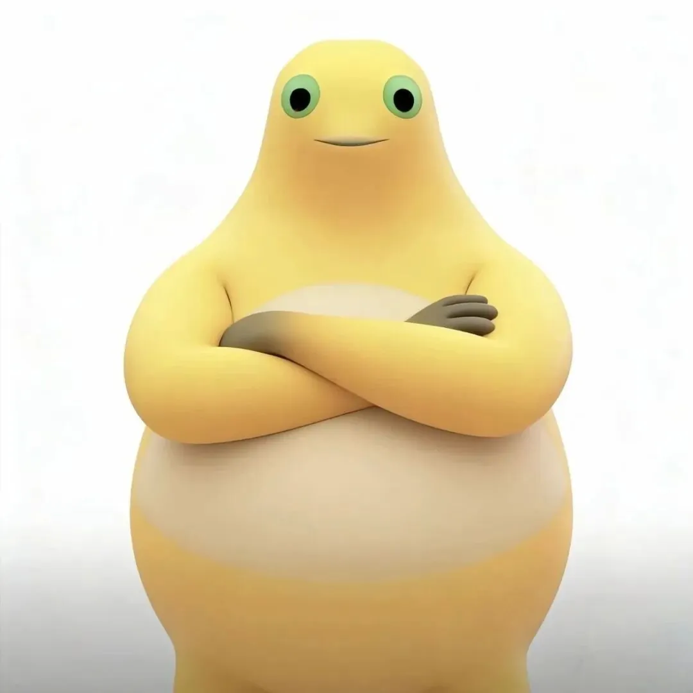
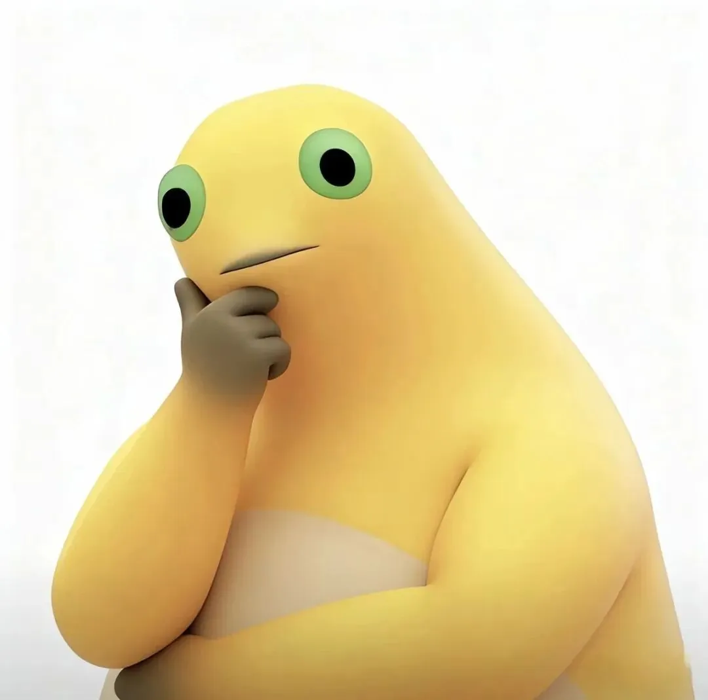

校园传送门 · 已为你开启
下一站，武汉城市职业学院。
奶蛙正在赶来接你
将前往学校官网 www.whcp.edu.cn
ABOUT THIS LITTLE TRIP
“武汉奶蛙大学”是一个网友自制的趣味名字。动画播放约 7 秒后，会跳转到武汉城市职业学院官网。
点击“等等奶蛙”可以暂停；点击“继续出发”恢复倒计时。打开这个窗口或图鉴时，倒计时也会暂停。
本站与学校没有官方关联，不提供招生、录取或身份认证服务。校徽使用用户提供的原图。
陪伴人数包含站长补录的历史人数；2026年10月14日累计数校准为505，此后按发起前往学校官网的独立浏览器继续去重累计。刷新、重播和预览不会增加人数；清除浏览器数据或更换浏览器会重新识别。
计数接口仅使用匿名浏览器标识去重，不保存姓名、联系方式或 IP 地址。网页不加载第三方统计脚本。
MEET YOUR LITTLE GUIDE
六种心情，同一只奶蛙。慢慢看，出发不着急。

